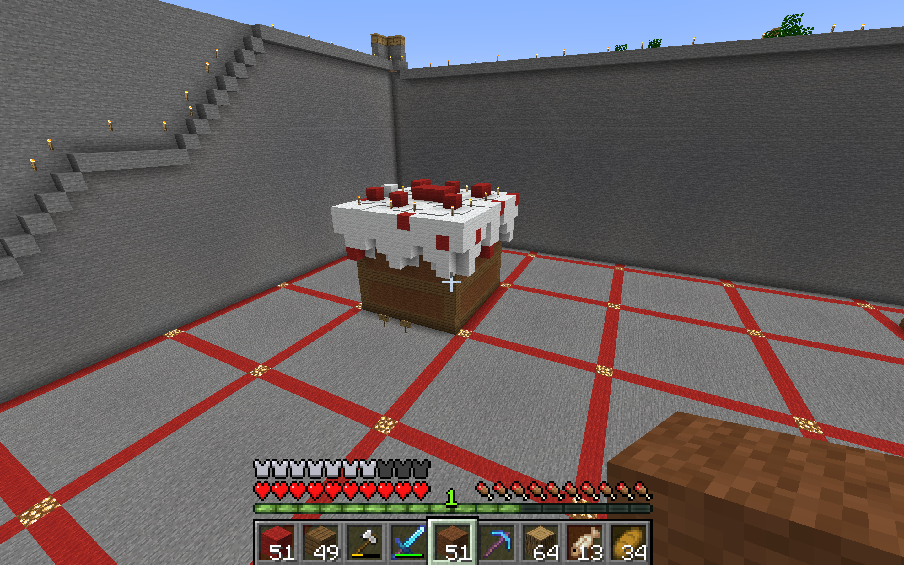

3D Print

3D prints are probably one of the coolest things ever invented. Using Minecraft, I was tasked with creating a sculpture of cultural significance. I chose to create a cake. Using Mineways, I extracted the sculpture from the Minecraft world and converted it into an STL file. Later, I printed it using a 3D printer. The entire process took 4 hours and 11 minutes.
